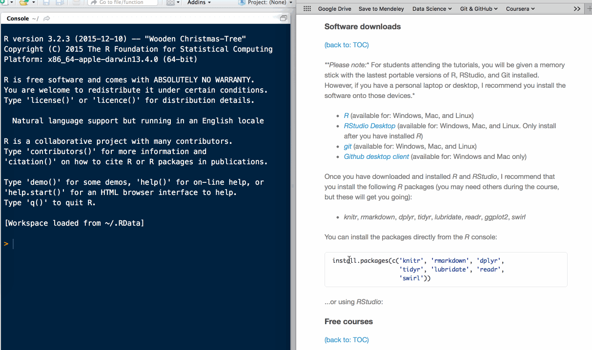

PHSL4005: Introduction to biostatistics
An introductory course on data handling and biostatistics for students studying towards a Bachelor of Health Sciences (BHSc) Honours in Physiology at the University of the Witwatersrand, South Africa. The course is based around the statistical programming language R.
The aims of the course are to introduce the basics of data wrangling, and reproducible data analysis and reporting. These aims are explored using the statistical computing programme R in the Rstudio integrated development environment (IDE), and git (with the GitHub web-based Git repository hosting service) for version control. The reason for choosing these apps is that they are free (as in beer and as in speech), and have well-established and active user and developer communities. You will need to a basic working knowledge of the command line, R and Git to complete the course. So, if you are not familiar with these apps I suggest that you prepare yourself by completing some free online courses before starting (see examples below).
Table of contents
Slides
| # | Tutorial | Content | Slides (RPubs) | Download slides (html) |
|---|---|---|---|---|
| 0. | Introduction | Course overview | RPubs link | Standalone slides |
| 1. | Tutorial 1 | Basic concepts and tools for reproducible research | RPubs link | Standalone slides |
[More to be added as course progresses]
Assignments
| Assignment | Files | Due date |
|---|---|---|
| Tutorial 1: [instructions] | [download file] | 17:00, 29 March 2016 |
[To be added as course progresses]
Resources
Software downloads
Please note: For students attending the tutorials, you will be given a memory stick with the lastest portable versions of R, RStudio, and Git installed. However, if you have a personal laptop or desktop, I recommend you install the software onto those devices.
- R (available for: Windows, Mac, and Linux)
- RStudio Desktop (available for: Windows, Mac, and Linux. Only install after you have installed R)
- git (available for: Windows, Mac, and Linux)
- Github desktop client (available for: Windows and Mac only)
Once you have downloaded and installed R and RStudio, I recommend that you install the following R packages (you may need others during the course, but these will get you going):
- knitr, rmarkdown, dplyr, tidyr, lubridate, readr, ggplot2, swirl
You can install the packages directly from the R console:
install.packages(c('knitr', 'rmarkdown', 'dplyr',
'tidyr', 'lubridate', 'readr',
'swirl'))
…or using RStudio:

Free courses
R online
- Introduction to R by datacamp.com
- R Programming by codeschool.com
Learning R with the swirl package
The swirl package by the Swirl Development Team brings a suite of ste-by-step interactive training courses on R, which are aimed primarily for the novice R user.
# Script to install and use 'swirl'
# If you haven't already installed swirl
install.packages('swirl')
# Load the 'swirl' package
library(swirl)
# Launch a 'swirl' session and follow the prompts
swirl()To install additional swirl courses:
# Load the 'swirl' package
library(swirl)
# Download a course from the 'swirl' github repository
install_from_swirl('Course Name Here')
# Luanch a 'swirl' session
swirl()Courses include (but are not limited to):
- ‘R Programming’
- ‘Getting and Cleaning Data’
- ‘Exploratory Data Analysis’
- ‘Data Analysis’
- ‘Regression Models’
Other
- Learn the Command Line by codecademy.com
Cheat-sheets
Remembering commands can be difficult, especially when you are a new user or you are out of practice. So here are links to some useful cheat-sheets:
R
- Data wrangling with dplyr and tidyr from rstudio.com
- RMarkdown from rstudio.com
git
- git from git-tower.com
- git from github.com
- git the simple guide (interactive)
- git workflow overview from git-tower.com
Miscellaneous
- Command line from git-tower.com